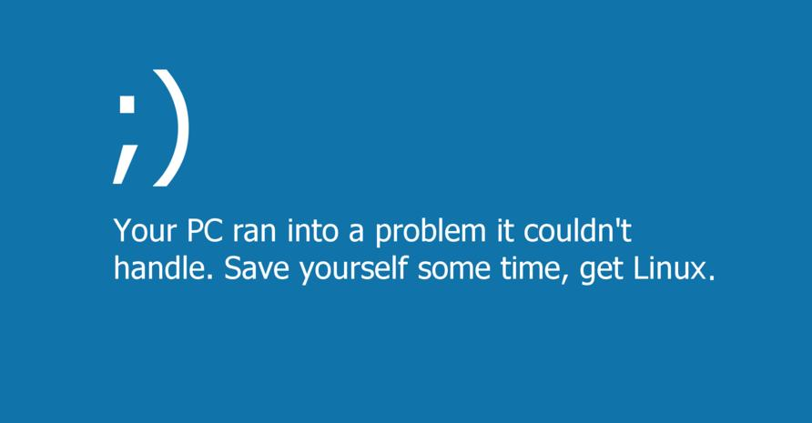

Máquinas HackTheBox
Bem-vindo a todos! Aqui serão expostos alguns relatórios das máquinas que irei fazer, para partilhar com vocês, conteúdo em português.
Acho que nunca vi pela internet a resolução das máquinas em português (certamente que é normal, pois tem menos visibilidade...), e por isso decidi fazê-lo. Além de partilhar com quem quiser ler, isto reforça a minha aprendizagem, e organiza as minhas ideias... Recomendo a qualquer pessoa que esteja a estudar para cyber segurança ou para OSCP/CEH/... Os relatórios não são nada de muito elaborado, mas têm bastante conteúdo. E NUNCA JAMAIS IREI UTILIZAR METASPLOIT!!!
Secção Windows
